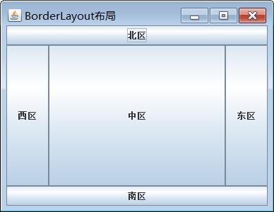

Java的图形用户界面 三要素：
示例代码：
1 2 3 4 5 6 7 8 9 10 11 12 13 14 15 16 17 18 19 20 21 22 23 24 25 26 27 28 29 30 31 32 33 34 35 36 37 38 39 40 import java.awt.*;import java.awt.event.*;import javax.swing.*;public class TestGUI extends JFrame implements ActionListener //这里TestGUI 身兼两职，即是窗体又是监听器 JButton english = new JButton("English Title" ); JButton 中文 = new JButton("中文标题" ); TestGUI() { setLayout(new FlowLayout()); add(english); add(中文); english.addActionListener(this ); 中文.addActionListener(this ); setLocation(100 , 100 ); setSize(250 , 150 ); setVisible(true ); setDefaultCloseOperation(JFrame.EXIT_ON_CLOSE); } public void actionPerformed (ActionEvent ae) { if (ae.getSource() == english) { this .setTitle("The first GUI" ); } if (ae.getSource() == 中文) { this .setTitle("第一个图形界面" ); } } public static void main (String[] args) { new TestGUI(); } }
java.awt 包
基本组件包括：
Button、Label、TextField、TextArea、List、Checkbox、Menu、MenuBar等
容器组件包括：
Frame、Dialog、Applet和Panel
java.awt包中的组件称为AWT组件
javax.swing包
这个包中提供了与java.awt包中几乎完全相对应的组件
javax.swing包中的JButton类与java.awt包中的Button类相对应，JFrame类与Frame类相对应
javax.swing包中的组件称为Swing组件
java.awt包和java.swing包：
开发javax.swing包的主要目的是为了程序的可移植性
AWT组件类创建的对象在具体的机器上要有一个“对等体” 负责程序的运行，在不同机器上的程序会
略有差别，占用资源多，并且复杂的用户界面程序难于调试
Swing组件类取消了对等体，直接针对不同的系统解释执行字节码，使得程序消耗资源少，并且在
不同机器上运行时几乎看不出界面的差别
由于消耗资源的程度不同，把有对等体的AWT组件称为重组件 ，而没有对等体的Swing组件称为轻
组件
在今后的编程过程中要尽量采用轻组件，尽量避免采用重组件
窗体类JFrame类 当应用程序需要一个窗口时，可以使用JFrame类或其子类创建一个对象
窗体默认被系统添加到显示器屏幕上，因此不允许将一个窗体添加到另一个容器中
JFrame类在javax.swing包中
构造方法：
public JFrame() —— 创建一个无标题的窗口
public JFrame(String title) —— 创建一个标题为title的窗口
常用方法：
1 2 3 4 5 6 7 8 9 10 11 public void setLocation (int x, int y) —— 设置窗体左上角元素在屏幕中的位置public void setSize (int width, int height) —— 以宽和高设置窗体大小public void setBounds (int x, int y, int width, int height) —— 设置窗体边界，完全确定窗体的位置和大小public void setVisible (boolean b) —— 设置窗体为可见的。窗体默认为不可见的public void setResizable (boolean resizable) ——设置窗体是否可以调整大小。默认窗体可以调整大小public void setDefaultCloseOperation (int operation) —— 设置单击窗体右上角的关闭图标时，程序 将要做的工作。
这里参数operation有4种取值，都是int型：
JFrame.DO_NOTHING_ON_CLOSE //不做任何事情
JFrame.HIDE_ON_CLOSE //隐藏当前窗口
JFrame.DISPOSE_ON_CLOSE //隐藏当前窗口，并释放窗体占有的其它资源
JFrame.EXIT_ON_CLOSE //结束窗体所在的应用程序
布局管理器 FlowLayout类不会随着窗体的大小而改变，但其位置会随窗体的位置而改变，在java.awt包中
示例：
1 2 3 4 5 6 7 8 9 10 11 12 13 14 15 16 17 18 19 20 import java.awt.*;import javax.swing.*;public class TestFlowLayout public static void main (String[] args) { JFrame f = new JFrame(); f.setLayout(new FlowLayout(FlowLayout.RIGHT, 0 , 15 )); JButton[] buttons = new JButton[5 ]; for (int i=0 ; i<5 ; i++) { buttons[i] = new JButton("按钮" + i); f.add(buttons[i]); } f.setTitle("验证FlowLayout" ); f.setBounds(100 ,100 ,250 ,150 ); f.setVisible(true ); f.setDefaultCloseOperation(JFrame.EXIT_ON_CLOSE); } }
BorderLayout类
JFrame类默认为BorderLayout，在java.awt包中
特点：
东、西区和南、北区充满程度不一样
BorderLayout布局的容器某个位置的某个组件占据了整个区域，而不是选择一个合适自己的尺寸
在某个位置重复添加组件的效果是：只有最后一个添加的组件可见
缺少某个位置的组件时，其他位置的组件会侵占该位置

示例：
1 2 3 4 5 6 7 8 9 10 11 12 13 14 15 16 17 18 19 20 21 22 23 24 25 import java.awt.*;import javax.swing.*;public class TestBorderLayout extends JFrame TestBorderLayout() { add(BorderLayout.NORTH,new JButton("北区" )); add(BorderLayout.SOUTH,new JButton("南区" )); add(BorderLayout.EAST,new JButton("东区" )); add(BorderLayout.WEST,new JButton("西区" )); add(BorderLayout.CENTER,new JButton("中区" )); setTitle("BorderLayout布局" ); setLocation(200 , 200 ); setSize(250 , 250 ); setVisible(true ); setDefaultCloseOperation(JFrame.EXIT_ON_CLOSE); } public static void main (String[] args) { new TestBorderLayout(); } }
GridLayout类
大小可以改变，位置不变，充满每个单元格，在java.awt包中，当控件个数多于单元格数，首先满足行
如果将JFrame窗体设置为3x2的格子布局：
示例:
1 2 3 4 5 6 7 8 9 10 11 12 13 14 15 16 17 18 19 20 21 22 23 24 25 import java.awt.*;import javax.swing.*;public class TestGridLayout extends JFrame TestGridLayout() { GridLayout grid = new GridLayout(3 ,2 ,5 ,15 ); setLayout(grid); for (int i=0 ; i<10 ; i++) { add(new JButton("按钮" + (i+1 ))); } setTitle("GridLayout布局" ); setLocation(200 , 200 ); setSize(250 , 250 ); setVisible(true ); setDefaultCloseOperation(JFrame.EXIT_ON_CLOSE); } public static void main (String[] args) { new TestGridLayout(); } }
Box类
又分为行型盒式布局和列型盒式布局，行型盒式布局容器中添加的组件的上沿在同一水平线上，列
型盒式布局容器中添加的组件的左沿在同一垂直线上
Box类的静态方法createHorizontalBox()可以获得一个具有行型盒式布局的盒式容器
Box box；
Box类的静态方法createVerticalBox()可以获得一个具有列型盒式布局的盒式容器
Box box；
box=Box.createVerticalBox();
如果想控制盒式布局容器中组件之间的距离，就需要使用水平支撑或垂直支撑：
示例：
1 2 3 4 5 6 7 8 9 10 11 12 13 14 15 16 17 18 19 20 21 22 23 24 25 26 27 28 29 30 31 32 33 34 35 36 37 38 39 40 41 42 43 44 45 46 47 import javax.swing.*; import java.awt.*;import javax.swing.border.*;class BoxLayout extends JFrame Box box,box1,box2; BoxLayout(String s) { box1=Box.createVerticalBox(); box1.add(new JLabel("输入用户名" )); box1.add(Box.createVerticalStrut(10 )); box1.add(new JLabel("输入密码" )); box1.add(Box.createVerticalStrut(10 )); box1.add(new JLabel("输入验证码" )); box2=Box.createVerticalBox(); box2.add(new JTextField(20 )); box2.add(Box.createVerticalStrut(10 )); box2.add(new JTextField(20 )); box2.add(Box.createVerticalStrut(10 )); box2.add(new JTextField(20 )); box=Box.createHorizontalBox(); box.add(box1); box.add(Box.createHorizontalStrut(10 )); box.add(box2); setLayout(new FlowLayout()); add(box); validate(); setTitle(s); setBounds(0 ,0 ,260 ,260 ); setVisible(true ); setDefaultCloseOperation(JFrame.EXIT_ON_CLOSE); } } public class TestBox public static void main (String args[]) { new BoxLayout("登录界面" ); } }
中间容器（JPanel类）
在javax.swing包中，最常用 的中间容器是JPanel类的对象，可以为JPanel类的对象设置布局，向其
中添加组件，然后将JPanel类的对象作为一个整体添加到窗体或其它容器中，默认布局为flowlayout布局
示例：
1 2 3 4 5 6 7 8 9 10 11 12 13 14 15 16 17 18 19 20 21 22 23 24 25 26 27 28 29 30 31 32 33 34 35 36 37 38 39 40 41 import javax.swing.*;import java.awt.*;public class TestPanel extends JFrame JLabel path=new JLabel("请输入文件路径和名称：" ); JTextField filePath = new JTextField(); JLabel append = new JLabel("请输入需要追加的内容：" ); JTextField appendContent = new JTextField(); JButton button=new JButton("将文本区的内容写入文件" ); JTextArea area = new JTextArea(); TestPanel() { JPanel north = new JPanel(); north.setLayout(new GridLayout(3 ,2 ,0 ,5 )); north.add(path); north.add(filePath); north.add(append); north.add(appendContent); north.add(button); add(north, BorderLayout.NORTH); add(new JScrollPane(area), BorderLayout.CENTER); setLocation(100 , 100 ); setSize(400 , 300 ); setDefaultCloseOperation(JFrame.EXIT_ON_CLOSE); setVisible(true ); } public static void main (String[] args) { new TestPanel(); } }
运行结果：
文件组件和ActionEvent事件 按钮和标签组件 复选框和单选按钮 TextArea（包括文本框、密码框） 无参在flowlayout布局中不会显示，在borderlayout中可以显示，充满整个空间